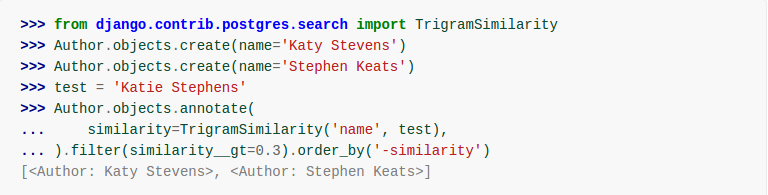

Trigram Similarity
November 01 2017
Trigram Phrase Matching is a method of identifying phrases that have a high probability of being synonyms. It is based on representing each phrase by a set of character trigrams that are extracted from that phrase. The character trigrams are used as key terms in a representation of the phrase much as words are used as key terms to represent a document. The similarity of phrases is then computed using the vector cosine similarity measure.
You just have to execute the sql command to run this code, CREATE EXTENSION pg_trgm;
pg_trgm
The pg_trgm module provides functions and operators for determining the similarity of alphanumeric text based on trigram matching, as well as index operator classes that support fast searching for similar strings.
Trigram (or Trigraph) Concepts
A trigram is a set of three consecutive characters taken from a string. A string is considered to have two spaces prefixed and one space suffixed when determining the set of trigrams that comprise the string. We can measure the similarity of two strings by counting the number of trigrams they share. This simple idea turns out to be very effective for measuring the similarity of words in many natural languages.
Note: pg_trgm ignores non-word characters (non-alphanumerics) when extracting trigrams from a string. Each word is considered to have two spaces prefixed and one space suffixed when determining the set of trigrams contained in the string. For example, the set of trigrams in the string “cat” is “ c”, “ ca”, “cat”, and “at ”. The set of trigrams in the string “foo|bar” is “ f”, “ fo”, “foo”, “oo ”, “ b”, “ ba”, “bar”, and “ar ”.
Public Functions
Returns a number that indicates how closely matches the two arguments are. A zero result indicates that the two words are completely dissimilar, and a result of one indicates that the two words are identical.
show_limit()Returns the current similarity threshold used by the '%' operator. This in effect sets the minimum similarity between two words in order that they be considered similar enough to be misspellings of each other, for example.
set_limit(real)Sets the current similarity threshold that is used by the '%' operator, and is returned by the show_limit() function.
show_trgm(text)Returns an array of all the trigrams of the supplied text parameter.
Public Operators
The '%' operator returns TRUE if its two arguments have a similarity that is greater than the similarity threshold set by set_limit(). It will return FALSE if the similarity is less than the current threshold.
text <% text (returns boolean)Returns true if its first argument has the similar word in the second argument and they have a similarity that is greater than the current word similarity threshold set by pg_trgm.word_similarity_threshold parameter.
text %> text (returns boolean)Commutator of the <% operator.
text <-> text (returns real)Returns the “distance” between the arguments, that is one minus the similarity() value.
text <<-> text (returns real)Returns the “distance” between the arguments, that is one minus the word_similarity() value.
text <->> text (returns real)Commutator of the <<-> operator.
Trigram Algorithm
Trigram production rules
Let STR be the string of characters that represent a phrase. STR is processed as follows.
1) STR is lower cased.
2) STR is broken into terms at spaces and these individual terms are used to produce trigrams. Strings of length k+3 produce k+1 overlapping trigrams, while any string of length 3 or shorter is taken as the only trigram produced (for simplicity we shall refer to it as a trigram even if it has only one or two letters). All such trigrams are attributes of STR.
3) The first trigram produced from each term derived from STR is marked at the right end by the addition of the symbol `!' and the result is included as an attribute with a local count of 2. Also the first letter of the term is marked by adding the character `#' to the right and included as an attribute. Finally between any two adjacent terms in the phrase the trigram which consists of the first letters separated by a space is added as an attribute.
As an example consider the phrase "DNA sequence selectivity". This is lower cased to "dna sequence selectivity" and step 2) gives rise to the trigrams dna, seq, equ, que, uen, enc, nce, sel, ele, lec, ect, cti, tiv, ivi, vit, ity. Step 3) then adds the attributes dna!, d#, seq!, s#, sel!, s#, d s, s s.
The Similarity Score
All attributes are given global weights of the form sqrt(log(N/nt)). These are relatively standard inverse document frequency weights. Here N represents the collection size, which in this case is the number of phrases in the set we are studying. The value nt is the frequency of occurrence throughout the collection of the attribute being weighted. Each attribute is also given a local weight which is log(1+ft) where ft is the number of times the attribute is seen in the particular phrase where the local weight is to be applied.
When all attributes have been weighted then each phrase is represented by the vector of local times global weights for all attributes as computed for that phrase. As usual only those attributes that actually occur in a phrase have nonzero coordinates in this vector representation.
The Similarity Score
The similarity between two phrases is then computed as the cosine of the angle between them. This is always a number between 0 and 1. We have found that when the score is roughly 0.7 or greater the probability becomes high that the two phrases are synonymous in meaning.
Application to Indexing
For purposes of indexing we process according to the following algorithm:
1) Break the title and abstract of a document up into all possible phrases consisting of one to six contiguous words without punctuation occurring within.2) For each phrase produced in 1) compute the score against all phrases in UMLS and record the phrase that obtains the highest score.
3) For each word in the title and abstract, record that phrase of which that word is a member and which receives the highest overall score against the UMLS and record also the UMLS phrase that produced that highest score.
4) For each phrase pair obtained in 3) where one element is a phrase in the document and the other is a phrase in UMLS, count how many times the pair appears in different places in the document and return the pair, their score, and the count.